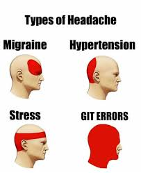

Created by Daniele Scasciafratte / @Mte90net
Or you were following another talk instead of this.
There are Git Guis but I prefer the commandline as works always
git remote add upstream https://original-repogit fetch --all you update everythinggit merge upstream/master you are merging the upstream repository in your fork
git diff HEAD~6 > last-6-commits.diff
git range-diff 9dcf19459ffb8b02e8232eacdc6079a265517bed..f93aca03caba4edaf787e9751db54cf42d662180
https://github.com/mte90/project/pull/12.diff
https://github.com/mte90/project/pull/12.patch
git reset --hard HEAD~1
git reset --hard (upstream/master)
git stash
git branch -v
git remote -v
# For Git
alias git-commit-rename='git commit --amend'
alias git-remove-last-commit='git reset --soft HEAD~1'
# To remember the SSH password for 36000 minutes
alias git-pass='ssh-add -t 36000'
alias gpm="git push origin master"
alias git-restage="git update-index --again"
alias git-rename-branch="git rename-branch"
alias git-remove-deleted-branch-remotely="git remote prune origin"
# Add and remove new/deleted files from git index automatically
function git-merge-last-commits() { git reset --soft HEAD~$1 && git commit; }
function git-stat-months() { git diff --shortstat "@{$1 month ago}"; }
https://github.com/mte90/dotfiles/blob/master/.bash/alias.sh.
feat(release): updated CI
refactor(engine): changed the sort order
fix(css): wrong padding for header
...
Git wrapper executed before and after the git commands.
git clone https://github.com/mte90/project-forked --fork
git checkout https://github.com/mte90/project-forked/pull/12
Remove files from a git repo once for all.
java -jar bfg.jar --strip-blobs-bigger-than 100M some-big-repo.git
bfg --delete-files id_{dsa,rsa} my-repo.git
GitHub and GitLab let you disable the force solution to specific branch. Enable it!